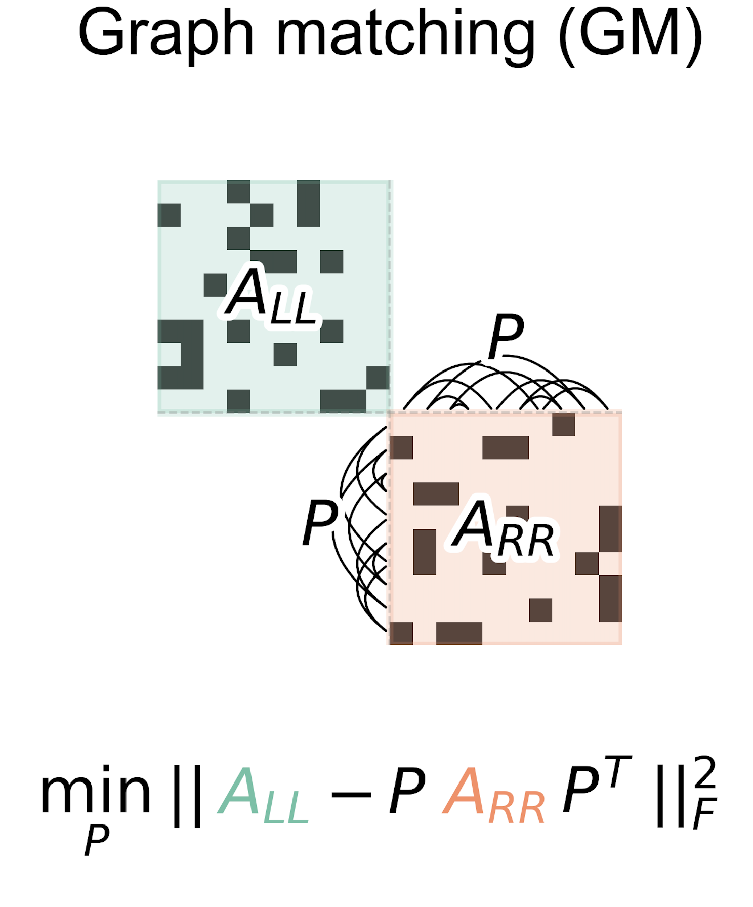

Tools for comparing connectomes:
evaluating the bilateral symmetry of a whole insect brain
Contents

Tools for comparing connectomes:
evaluating the bilateral symmetry of a whole insect brain¶
Benjamin D. Pedigo¶
(he/him) -  bpedigo@jhu.edu
NeuroData lab
Johns Hopkins University - Biomedical Engineering
bpedigo@jhu.edu
NeuroData lab
Johns Hopkins University - Biomedical Engineering
Team¶
 Michael Winding
Michael Winding
 Mike Powell
Mike Powell
 Eric Bridgeford
Eric Bridgeford
 Ali
Ali
Saad-Eldin
 Marta Zlatic
Marta Zlatic
 Albert Cardona
Albert Cardona
 Carey Priebe
Carey Priebe
 Joshua Vogelstein
Joshua Vogelstein
Comparative connectomics¶
Connectomes \(\leftrightarrow\) {disease, evolution, development, experience, …}
As related connectomes are mapped, we’ll want evaluate the significance and nature of differences between them
Examples for today’s talk¶
1. Are the left and right sides of the larva brain connectome different?¶
2. How can we automatically estimate neuron pairing between brain hemispheres?¶
Testing for differences¶
Are these two populations different?¶

\(\color{#66c2a5} Y^{(1)} \sim F^{(1)}\) \(\color{#fc8d62} Y^{(2)} \sim F^{(2)}\) \(H_0: \color{#66c2a5} F^{(1)} \color{black} = \color{#fc8d62} F^{(2)}\) vs. \(H_A: \color{#66c2a5} F^{(1)} \color{black} \neq \color{#fc8d62} F^{(2)}\)
Are these two networks different?¶

\(A^{(L)} \sim F^{(L)}\) \(A^{(R)} \sim F^{(R)}\) \(H_0: \color{#66c2a5} F^{(L)} \color{black} = \color{#fc8d62}F^{(R)}\) vs. \(H_A: \color{#66c2a5} F^{(L)} \color{black} \neq \color{#fc8d62} F^{(R)}\)
Many ways to write what “symmetry” means! (different \(F\), different statistics)¶
Example: testing for differences in cell type connections¶
Fit block models to both hemispheres

Compare connection probabilities: \(H_0: \color{#66c2a5} B^{(L)} \color{black} = \color{#fc8d62} B^{(R)}\) \(H_A: \color{#66c2a5} B^{(L)} \color{black} \neq \color{#fc8d62} B^{(R)}\)

Overall comparison: \(p < 10^{-7}\)
Examining the effect of edge weights¶


Estimating neuron pairing using graph matching¶


~80-85% agreement with an expert annotator.
Improving graph matching to suit connectomes¶

Conclusions¶
Demonstrated novel tools for comparing connectomes, case study on symmetry in a Drosophila larva
Model-based network comparison
Improved methods for matching neurons via connectivity
Can be applied more generally to compare connectomes!
Ongoing work: combining testing and matching frameworks to evaluate stereotypy at the edge-level
Have other network analysis questions? Let’s chat!
Slides, code, papers, contact